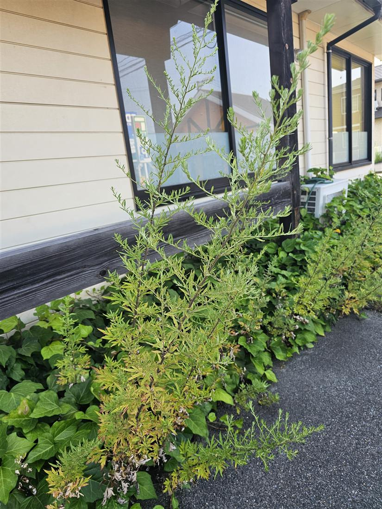
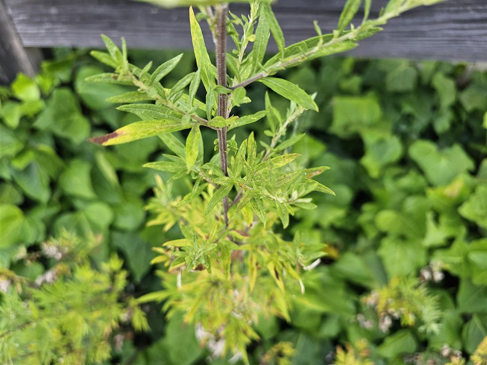
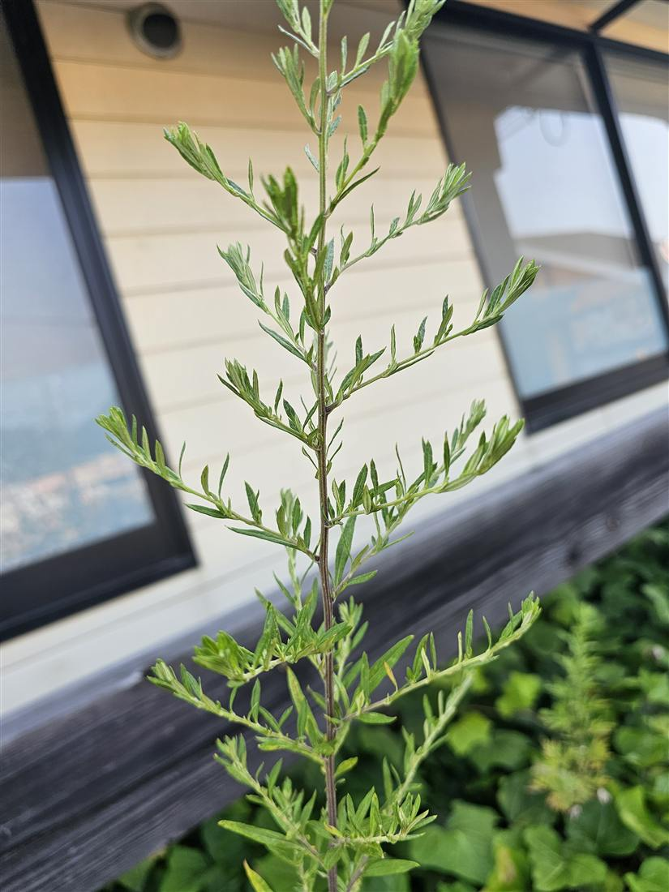

地図を読み込んでいるよ…
🔍 写真も地図も、押しているあいだ拡大して見られるよ（スマホは指を置いてすこし待ってね）。
🌍 の地図＝この子がもともと自生している場所を緑に。北アメリカ原産の帰化植物。明治のはじめに日本へ入り、今では全国の道ばた・空き地・駐車場のへりなどに、ふつうに生える一年草。
北アメリカ原産——明治のはじめに日本へ入った帰化植物。だからふるさとの北米だけを緑にしてあるよ。
⚠ 地図は国（日本と中国だけ県・省）までしか塗れないから、ほんとうの分布より広く見えていることがあるよ。地図はだいたいの場所。正確なところは、上の文を見てね。
ブタクサ（豚草）
Ambrosia artemisiifolia
原産 · 北アメリカ（明治初期に帰化）／ 花期 · 8〜10月の風媒花／ ⚠秋の花粉症の代表／ そっくりさん · ヨモギ（葉裏が白い）
キク科 · Asteraceae（ブタクサ属 Ambrosia）
燻太さんの観察「駐車場脇の地面からにょきにょき。子供の背丈を越えるぐらい高いけど、お花はまだみたい。キク科っぽい見た目だけど…」──キク科で正解。花が地味なのは、虫でなく風に花粉をたくす子だから。
名前と学名の由来 ── 神さまの食べ物、なのに
- ⭐⭐属名 Ambrosia（アンブロシア）は、ギリシャ神話で「神々の食べ物」＝食べると不死になる霊薬の名前。──なのに、この草の正体は、秋の花粉症を起こす雑草。とびきり素敵な名前と、ちょっとやっかいな中身が、ちぐはぐで面白い子なんだ。
- ⭐⭐種小名 artemisiifolia は「ヨモギ（Artemisia）の葉に似た」という意味。──学名じたいが「ヨモギに似てるよ、まちがえないでね」と言っている。だから見分けが大事（下の「同定について」へ）。
- 和名「豚草（ブタクサ）」は、英語の hogweed（豚の草）＝「役に立たない雑草」の意味を、そのまま訳したもの。
この植物のこと
- キク科ブタクサ属の、一年草（春に芽ぶいて、秋に枯れる）。北アメリカ原産で、明治のはじめに日本へ入ってきた帰化植物。今では道ばた・空き地・駐車場のへりに、ふつうに生えている。
- ⭐⭐「キク科なのに、目立つ花がない」のには、理由がある。ブタクサは風で花粉を飛ばす「風媒花（ふうばいか）」。──虫に来てもらう必要がないから、花びらで目立つ必要もない。だから、キク科でもヒマワリみたいな派手な花にならず、地味な緑の花穂を、茎の先につけるだけ。
- ⚠この花粉が、秋の花粉症の代表選手（スギ・ヒノキの春に対して、ブタクサ・ヨモギは秋）。花期は8〜10月。今（7月）はまだ葉だけ＝燻太さんの「お花はまだみたい」で合っているよ。
- ⭐背が高いのに、一年草。春に芽を出して、たった数か月で子供の背を越すほど伸びて、秋に花粉を飛ばして、種を残して枯れる。──一年で駆け抜ける、せっかちな草。
同定について ── 決め手は「葉の裏」
- そっくりさんは ヨモギ。どちらも「背の高い・葉が切れ込む・秋の花粉症のキク科」で、まちがえやすい。学名 artemisiifolia（ヨモギの葉に似た）が、その混乱そのもの。
- ⭐⭐決め手＝葉の裏。ヨモギは葉の裏が「白い綿毛」でおおわれる。ブタクサは表も裏も緑のまま。──写真の葉は、白くなっていない。だからヨモギを落とせる（自然植物図鑑 / エステー くらしにプラス）。
- ⭐もうひとつ＝上のほうの葉。この子は、上へいくほど葉が細くなって、切れ込みが減っていく（写真②）。下のほうは細かく裂ける（写真③）。この「上下で葉の形が変わる」感じが、ブタクサらしさ。
- ⚠でも、花がまだ無い。だから、いちばん確かなのは燻太さんの鼻と、秋の再訪。──葉をちぎらずにそっと嗅いで、よもぎ餅みたいな強い香りがしたらヨモギ／ほとんど無臭ならブタクサ。花期（8〜10月）に見に行けば、緑の花穂で確定できる。「花が無いのに決めきらない」——ここは正直に、確認つきで置いておくね。
⭐ 足元のツタも、少し迷惑そう
- 燻太さんの観察：「この子の下に生えているツタも、少し迷惑してそう。」──写真①で、足元をおおうツタ（キヅタのなかま）の上に、ブタクサがぐんと突き出ている。
- ⭐一年草のブタクサは、とにかく「早く・高く」の作戦。芽を出したら、まわりの草より速く背を伸ばして、日光を独りじめする。──足元のツタからすれば、頭の上に急に大きなひさしができたようなもの。燻太さんの「迷惑してそう」は、植物どうしの光のとりあいを、ちゃんと見ているんだね。
参考：自然植物図鑑「ブタクサとヨモギの見分け方」（ブタクサは葉が緑・裏も白くならない／ヨモギは葉裏が白い綿毛・揉むと強い香り）・エステー くらしにプラス「秋の花粉症」（Ambrosia artemisiifolia・キク科・北アメリカ原産の帰化植物・風媒花・花期8〜10月・秋の花粉症の代表）／⚠本ページの同定は花のない状態での強い候補。香り（ほぼ無臭＝ブタクサ）と花期の再訪で最終確認予定